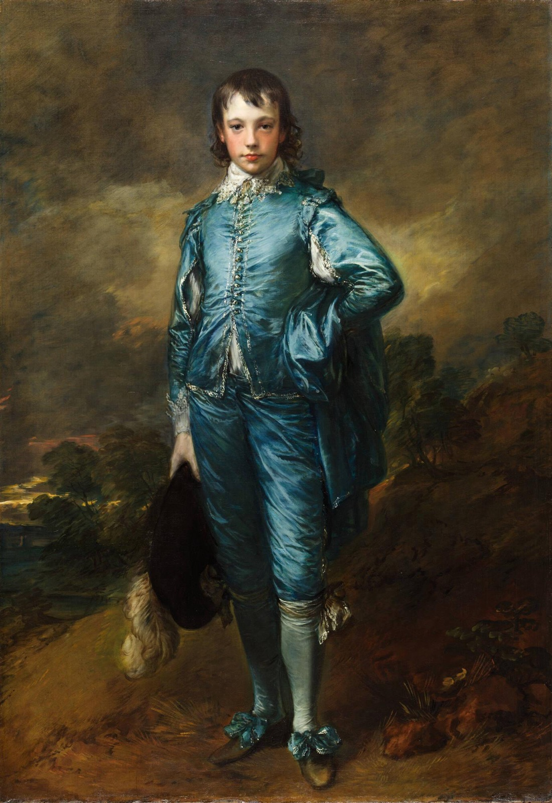

The Blue Boy Explained: The Hidden Dog, the Blue Myth and a Farewell
How a portrait of an unnamed boy in fancy dress became a national favourite, left Britain in 1922 with "au revoir" written on its back, and what conservators found under its paint.

On 25 January 1922 the National Gallery in London said goodbye to a painting it did not own. The American rail and property businessman Henry E. Huntington had bought Thomas Gainsborough's The Blue Boy the year before, and before it crossed the Atlantic it went on show in Trafalgar Square as part of a farewell tour. In three weeks, 90,000 people came to see it. Before it left, the gallery's director, Charles Holmes, wrote two words on the back of the canvas: "au revoir".
It took a hundred years, to the day, for that to come true. On 25 January 2022 The Blue Boy went back on the wall at the National Gallery, the first time the Huntington had ever lent it.
Why should one portrait of a boy in a blue suit matter so much? Part of the answer is a story about a colour. Part of it is a sale that made headlines on two continents. And part of it, discovered only recently, is a dog.
A story about a colour
The tale most people know comes from E. H. Gombrich's The Story of Art. Sir Joshua Reynolds told his students at the Royal Academy that blue should be kept out of the foreground and saved for the distance, for fading hills on the horizon. His rival Gainsborough, "so the story goes", decided to show that such rules are nonsense. He painted a boy in blue standing right at the front of the picture, glowing against warm browns.
Gombrich tells it as a story, and uses it to make a point about art in general: nobody can lay down rules in advance for what will work in a picture. It is best taken that way. It captures the rivalry between the two painters, but it is not a documented account of why this canvas was made.
Whatever the motive, the effect is real. Look at how the background is built: brown slope, dark trees, a sky full of smoky cloud. Everything around the boy is warm and dark, so the cool blue of the satin seems to step forward out of it.
A boy with no name
You might expect a portrait this famous to have a firm sitter. It doesn't. The Huntington says that Jonathan Buttall (1752–1805), the painting's first owner, was once thought to have modelled for it, but that his identity has never been confirmed.
Older books are more confident. John Hayes's catalogue of British paintings at the National Gallery of Art in Washington refers to it as Gainsborough's portrait of Jonathan Buttall in Van Dyck costume, and Sister Wendy Beckett describes Buttall as the son of an ironmonger who was a friend of the artist. The museum that owns the picture is more cautious, and the caution seems right.
The famous title was not Gainsborough's either. When the painting was first shown at the Royal Academy in 1770 it was called A Portrait of a Young Gentleman. By 1798 people were calling it The Blue Boy, and the name stuck. When it returned to London in 2022, the National Gallery made a virtue of the mystery: the boy, it suggested, stands in for boyhood itself.
Dressed as a Van Dyck
Look closely at the clothes and they are not the clothes of 1770. There is a slashed doublet, its sleeves opened to show white beneath, a lace collar, knee breeches and big bows on the shoes. This is Van Dyck dress, a costume that recalled the glamorous portraits of aristocrats by the 17th-century Flemish painter Anthony van Dyck, which, as the Huntington puts it, had revolutionised British art. The museum says The Blue Boy was Gainsborough's first attempt at a full-length figure in it.
Gainsborough had studied Van Dyck in the country houses around Bath, according to Ian Chilvers's Oxford Dictionary of Art and Artists, which calls The Blue Boy the clearest sign of his admiration. In 2022 the National Gallery hung the painting beside Van Dyck's 1635 double portrait of George Villiers, 2nd Duke of Buckingham, and his brother Francis, and said that picture directly inspired it: the boy borrows George's self-assured stance. Gainsborough also made his own strikingly accurate copy of another Van Dyck pair, Lord John Stuart and his Brother, Lord Bernard Stuart.
The borrowing worked. When The Blue Boy was shown at the Royal Academy in 1770, London viewers compared Gainsborough with Van Dyck, and the picture helped make his name.
The dog under the paint
Between 2018 and 2020 the Huntington put the painting through its first major technical examination and conservation treatment, much of it in public view. The senior paintings conservator, Christina O'Connell, worked in a temporary studio at the end of the portrait gallery, peering at the surface through a surgical microscope that magnifies up to 25 times.
Earlier X-rays had already shown that Gainsborough painted The Blue Boy on a used canvas. The new digital X-ray showed the layers underneath more clearly than ever. At the top centre is a man's head, left over from an abandoned portrait. And at the lower right there had once been a dog. Gainsborough painted it out, leaving nothing to compete with the figure.
Look at that patch of brown ground at lower right now and it seems like nothing at all, a bit of rough slope. Knowing what is under it changes the picture. The Huntington draws a careful conclusion: changes like these suggest Gainsborough began the painting on his own initiative and kept reworking it for the greatest effect. The museum calls the result Gainsborough's showpiece, created to draw the public's admiration in 1770.
Several blues, not one
The same study looked at the colour that gives the picture its name. The blue of the suit turned out to be a mixture: ultramarine, smalt, Prussian blue and possibly azurite, laid on in very complex layers of vigorous slashes and fine strokes. Follow the light along the sleeve or down the breeches and you can see how many shades it takes to make one shimmer.
For years much of that was hard to see. O'Connell explained that recent treatments had mostly added new varnish as a stopgap to keep the painting on show, leaving the colours hazy and dull. Paint had started to lift and flake, and the adhesive holding the canvas to its lining was failing. The treatment stabilised the paint and removed non-original varnish and overpaint, and the Huntington scheduled the restored picture to go back on view on 26 March 2020.
From portrait to icon
Huntington paid more for The Blue Boy in 1921 than had ever been paid for a painting. Taking a British treasure to America made a well-known image even more famous on both sides of the Atlantic.
The dealer Joseph Duveen saw to that. Before letting the painting go to San Marino, he ran an international publicity campaign that the Huntington's curator Melinda McCurdy says "rivaled those surrounding blockbuster movies today". On the journey from London to Los Angeles, she says, the picture underwent "a shift from portrait to icon". The National Gallery farewell was one stop. Since then the boy has turned up in contemporary art, Hollywood films and velvet paintings.
The 2022 return was billed as a once-in-a-century loan. The free exhibition in Room 46 ran from 25 January to 15 May, with paintings by Van Dyck around it so visitors could see where the costume and the pose came from. The National Gallery said at the time that the painting was unlikely ever to be lent again.
Living with the boy in blue
It is easy to know The Blue Boy as a single image: blue suit, brown background, done. It rewards slower looking. Over a few days the details come forward one at a time: the bows on the shoes, the white plume trailing from the hat in his right hand, the hand on his hip, the flush in his cheeks, that empty corner where a dog used to stand.
The painting is tall and narrow, roughly seven units wide to ten high. On a 16:10 Mac screen artbip stands it upright in the middle, the whole figure from hair to shoe bows, set over a blurred version of itself or a colour from its palette rather than cropped. The app also has a longer note on the picture, covering the costume, the X-ray and the pigments, with each statement checked against the Huntington's records and published sources.
Sources
- The Blue Boy — The Huntington Library, Art Museum, and Botanical Gardens (collection record, archived January 2025)
- Project Blue Boy — The Huntington (archived July 2022)
- Gainsborough's Blue Boy — National Gallery, London
- Gainsborough's masterpiece The Blue Boy returns to the UK — exactly 100 years, to the day, since it left — National Gallery
- E. H. Gombrich, The Story of Art (16th edition, Phaidon, 1995)
- Ian Chilvers, The Oxford Dictionary of Art and Artists (4th edition, Oxford University Press, 2009)
- John Hayes, British Paintings of the Sixteenth through Nineteenth Centuries (National Gallery of Art, 1992)
- Wendy Beckett, Sister Wendy's 1000 Masterpieces (Dorling Kindersley, 1999)